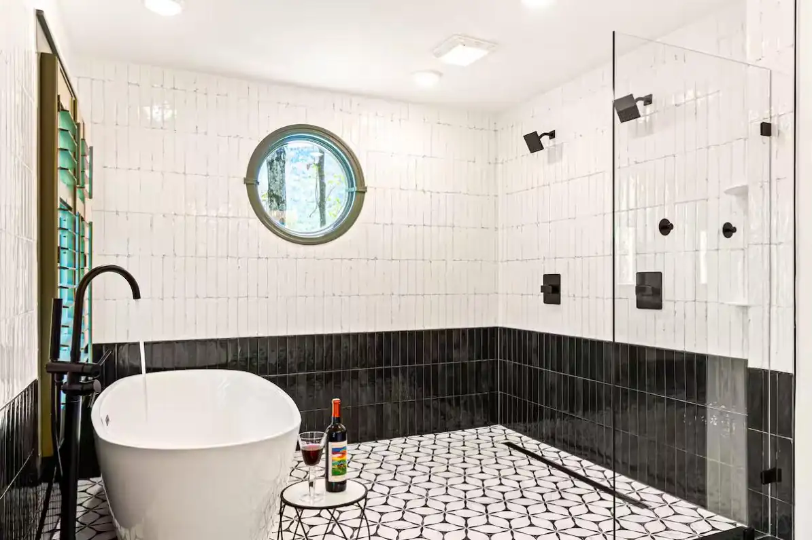
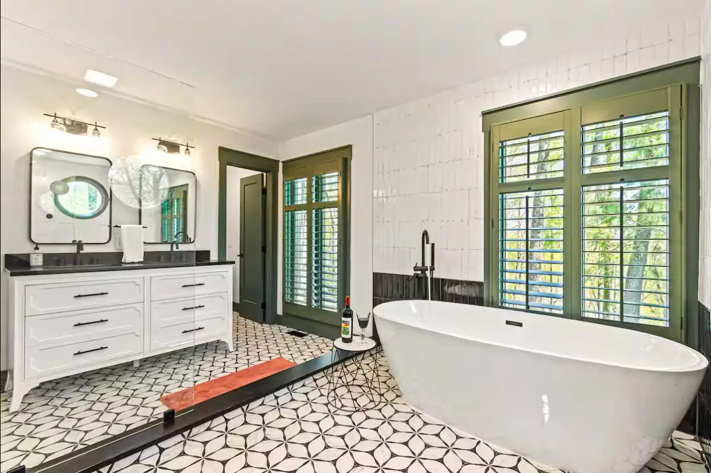

Home › Services › Tile & Stone
Tile & Stone Set Right, Sealed Right
Tile is unforgiving — every lazy shortcut shows up later as a cracked line, a hollow floor, or a leak inside a wall. We build showers, floors, backsplashes, and stone features the slow-and-right way, including the waterproofing you'll never see.
Showers built from the studs out
A beautiful shower that leaks is a demolition project on a timer. Ours start with proper substrate, slope, and full waterproofing before a single tile goes up — then the part you see: clean layout, tight lines, and details like niches and benches that make it feel custom, because it is.


Floors, backsplashes, and stone features
Heated tile floors that make mountain mornings civilized, kitchen backsplashes that finish a remodel, stone fireplace surrounds and accent walls that give a mountain home its weight. Inside or out, we choose materials and methods for real freeze-thaw conditions.
- Custom tile showers with full waterproofing
- Tile flooring, including heated floors
- Kitchen and bath backsplashes
- Stone fireplace surrounds and accent features
- Exterior stone and tile rated for freeze-thaw
Part of a bigger remodel? Even better.
Because we handle framing, plumbing coordination, drywall, and paint, tile work slots into a full bathroom or kitchen remodel with one crew and no finger-pointing between trades. Our rental properties showcase this work every night of the year.
Tile questions, answered
What makes a tile shower last?
What's behind the tile: solid substrate, correct slope, and complete waterproofing. That invisible work is where we spend the extra time — the tile is only as good as what it's sitting on.
Can you match tile work into a larger remodel?
Yes — one crew handles framing, drywall, tile, and paint, so a bathroom or kitchen remodel doesn't need four contractors pointing at each other.
Does tile hold up outdoors in the High Country?
Only if the materials and setting methods are rated for freeze-thaw — porcelain and proper mortar systems, correctly drained. We build exterior tile and stone for exactly these winters.
Can I see examples of your tile work?
Our vacation rentals feature our tile and stone work — terracotta showers, stone fireplaces — photographed professionally and reviewed by guests year-round. Ask and we'll point you to examples.